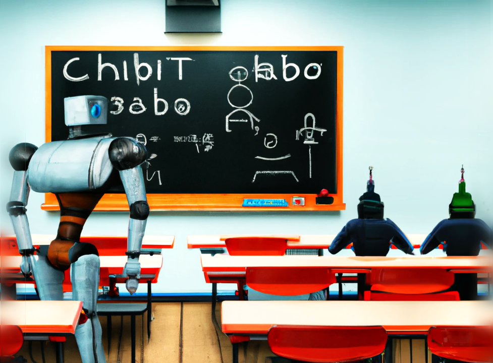
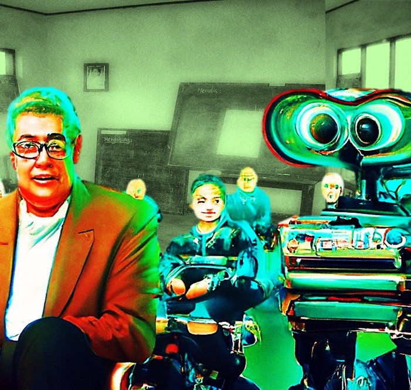
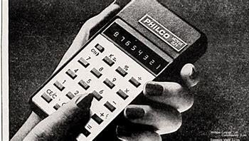
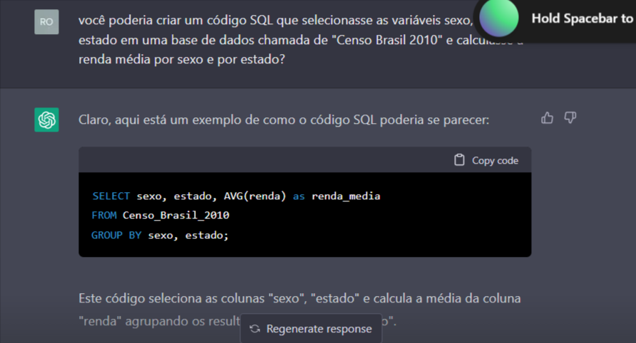

A empresa OpenAI lançou ao público, no final de 2022, o sistema de conversação ChatGPT-3, baseado em um modelo de processamento de linguagem natural. A qualidade do chat repercutiu em um debate entre profissionais e especialistas de várias áreas. Nesse texto, vamos mostrar uma conversa com o ChatGPT, sobre alguns tópicos, para refletir sobre o potencial desse tipo de recurso no ensino. Para além da questão se a inteligência artificial será capaz de substituir o trabalho humano criativo, propomos que professores devam conhecer, aprender e influir no desenvolvimento de ferramentas de informática que possam complementar e melhorar a qualidade do ensino, tornando mais dinâmica a relação ensino-aprendizagem.
Ilustração criada por Ronaldo Baltar com DALL-E
O lançamento do chatGPT-3 pela OpenAI, no final de 2022, criou um alvoroço entre profissionais de várias áreas, como jornalistas, artistas, advogados, médicos, engenheiros e até programadores e cientistas dos dados. Muitos professores também têm se perguntado se o trabalho docente corre o risco de desaparecer. Até então, parecia que a inteligência artificial (IA) não seria capaz (ao menos tão cedo) de substituir o trabalho humano criativo. O chatGPT está abalando essa confiança. Queiramos ou não, a inteligência artificial e o acesso a diversos conteúdos digitais pela Internet têm influenciado, de maneira profunda, a forma como aprendemos e interagimos com o conhecimento. Nesse novo contexto, é possível supor que a IA também poderá substituir o papel dos professores em sala? Enquanto algumas vozes já defendem banir o chatGPT e produtos similares das escolas e universidades, outros advogam que o futuro chegou e defendem uma escola sem professores. Muitos profissionais, não só da área de ensino, na verdade, ainda não têm muita clareza sobre o que é e qual o potencial desses novos recursos de inteligência artificial disponíveis ao público. Por isso, esse debate, apesar de um certo ar de ficção científica, acaba girando em torno da velha oposição entre ludismo e tecnocentrismo.
Ilustração criada por Ronaldo Baltar com DALL-E
Vamos explorar essa possibilidade, mostrando uma conversa detalhada e direta com o chatGPT. Nessa conversa, vamos abordar vários tópicos para tentarmos demonstrar porque o chatGPT tem sido tão admirado e temido por quem produz e trabalha com conteúdos intelectuais. Ao final, vamos refletir sobre a questão: professores podem vir a ser substituídos por um sistema de inteligência artificial como esse? Não, se não quisermos.
Em 2022, a empresa OpenAI tornou acessível ao público alguns de seus produtos, entre os quais, o gerador de imagens DALL-E 2 e o sistema de conversação ChatGPT-3. A OpenAI resulta de um empreendimento iniciado em 2015, entre outras pessoas, por Elon Musk, o multibilionário dono da Tesla, da Space X e agora do Twitter, e por Sam Altman, um cientista da computação e investidor anjo (investe basicamente em startups), com participação em vários negócios inovadores como Airbnb, Reddit e, entre outros, a OpenAI. O objetivo da empresa era criar uma inteligência artificial que pudesse se comunicar de forma amigável e produzir conteúdo de qualidade. De início, a OpenAI teve o apoio da Amazon e era um projeto sem fins lucrativos. Em 2018, mudou seu perfil com a estratégia de comercializar os produtos que estavam sendo desenvolvidos. Nesse mesmo ano, Elon Musk saiu da companhia para se concentrar no desenvolvimento do seu próprio projeto de inteligência artificial para os carros autônomos da Tesla. No ano seguinte, a Microsoft tornou-se parceira da OpenAI e entrou com um investimento de US$1 bilhão, com acesso aos recursos da infraestrutura de computação do Azure. Em 2020, a OpenAI lançou o GPT-3, um modelo de processamento de linguagem natural (PNL) que utiliza recursos de aprendizagem de máquina. A sigla GPT significa Generative Pre-trained Transformer (Transformador Generativo Pre-treinado). O número três representa a terceira geração do modelo. Grosso modo, essa sigla quer dizer que o sistema gera novas sentenças a partir da probabilidade da ocorrência de determinadas sequências de palavras previamente analisadas. Para encontrar a probabilidade de gerar o texto com sequência correta de palavras para uma dada pergunta, o modelo utiliza um conjunto enorme de textos que compõe os zettabytes de informações disponíveis na Internet, que todos nós alimentamos diariamente. No ano de 2022, a OpenAI colocou à disposição do público um novo formato de seu mecanismo de IA e chamou de ChatGPT-3. A Microsoft anunciou, em 2023, seu interesse em adquirir a tecnologia e incluí-la em produtos como o buscador Bing e o pacote Office 365 (Word, Powerpoint, Excel), além de outros usos. Várias outras empresas estão desenvolvendo produtos similares e muito provavelmente, em breve, essa tecnologia estará incorporada em vários serviços utilizados pelo público e por empresas. O ChatGPT, inclusive, foi pautado como tema no Fórum Econômico Mundial, em Davos, em 2023.
Inteligência artificial e aprendizagem de máquina não são tecnologias novas. Os primeiros experimentos computacionais nessas áreas datam dos anos 50 do século XX. Atualmente, já convivemos, sem nos darmos conta, com várias decisões realizadas automaticamente por sistemas baseados em IA, em áreas tão diversas como comércio, indústria, finanças, governos, serviços públicos em geral. Mas, o GPT apresenta um nível de resultado bem superior a tudo que se produziu, até o momento, nesse campo de processamento de linguagem natural. Para uma comparação inicial, o GPT não é um sistema de busca como o Google que, uma vez feita uma consulta, o mecanismo vasculha a internet em busca dos resultados que contém, em várias partes da página de texto, as palavras buscadas. Um sistema como o GPT, assim como os assistentes virtuais Cortana, Alexa e Siri, decompõe a pergunta em unidades linguísticas, para simular uma ”compreensão” do que se está solicitando como resposta. Por isso, se trata de um modelo de processamento de linguagem natural, um campo científico complexo, que une a linguística e a ciência da computação. A partir desse ”entendimento” do conteúdo da frase inicial, o modelo busca os resultados mais satisfatórios para a pergunta em sua base de informações textuais. Encontradas as informações com mais alta probabilidade de satisfazerem a pergunta, o modelo compõe a resposta utilizando o mecanismo de processamento de linguagem natural e gera um novo texto de saída. Assim, o texto criado pelo GPT não é uma cópia de um texto da Internet simplesmente, ou uma resposta padrão (como muitos dos assistentes virtuais). É um novo texto, criado a partir das informações encontradas em seu corpus. Os termos ”compreensão” e ”entendimento” estão entre aspas porque se trata de um sistema computacional. Como escreveu Hobbes, na introdução do ”O Leviatã” (em 1651), um mecanismo com molas e partes mecânicas, como um relógio, mesmo que funcione de forma autônoma, não tem vida. Podemos dizer que o mesmo vale para os sistemas robóticos e computacionais, ao menos até esse momento. A qualidade do resultado dos produtos de IA da empresa OpenAI é refinada ao ponto de se confundir com uma produção humana. Por exemplo, o sistema DALL-E, similar ao GPT para a criação de ilustrações a partir de palavras, ganhou um concurso de artes no estado do Colorado, nos Estados Unidos. A ilustração vencedora, chamada de ”Théâtre D’opéra Spatial”, foi feita no DALL-E por Jason Allen (que, na verdade, foi quem levou o prêmio do concurso). Esse fato abriu um intenso debate entre ilustradores e designers sobre o papel da IA para as artes.
”Théâtre D’opéra Spatial” por Jason Allen com DALL-E
Sim, Jason instruiu a AI, ele definiu as palavras que orientaram o sistema DALL-E a criar a imagem. Talvez até tenha feito algum retoque final em um programa de edição de imagens. Mas a criação não foi resultado da imaginação de Jason. Foi o resultado de um amálgama de imagens pré-treinadas pelas redes neurais do sistema DALL-E. Uma ilustração gerada assim por um software pode ser considerada arte? O fato é que a imagem gerada por DALL-E impactou os jurados a ponto de levar o prêmio do concurso. O ChatGPT cria textos como respostas a perguntas feitas pelos usuários. Mas não são apenas respostas simples. O grau de maturidade da tecnologia e o volume de informações treinadas permitem que se mantenha uma conversa contextualizada com o sistema. Além disso, o ChatGPT pode gerar códigos de programação, criar poemas, responder e-mails, fazer roteiros de blogs e criar vários outros tipos de texto, inclusive escrever artigos. Uma matéria do G1, de autoria de Luiza Tenente, fez um teste e publicou o resultado com o título ”Robô ’ChatGPT’ escreve redação do Enem em 50 segundos; saiba quanto ele tiraria na prova”. A autora solicitou ao ChatGPT para criar uma redação ao estilo do ENEM (Exame Nacional de Ensino Médio) sobre o tema ”Desafios para a valorização de comunidades e povos tradicionais no Brasil”. O resultado foi avaliado, a pedido da reportagem, por duas professoras de redação, Marina Rocha e Flávia Consolato. A nota final da redação, escrita pelo ChatGPT, ficaria, segundo as especialistas, em 680 de um máximo de 1.000 pontos. A nota média dos candidatos do ENEM gira em torno de 588 pontos! Em um outro exemplo, o economista Pedro Fernando Nery apresentou um texto parcialmente escrito pelo ChatGPT em sua coluna no Estadão e colocou o título ”Não escrevi esta coluna, foi uma inteligência artificial”. O artigo mostra como o conteúdo criado pelo ChatGPT pode facilmente ser confundido com textos criados por pessoas. Há várias outras matérias em jornais, revistas especializadas e até vídeos no YouTube com esse mesmo teor. Um artigo do jornal britânico, The Guardian, anunciava em 2020: ”A robot wrote this entire article. Are you sacred yet, human?”. A autoria do artigo, publicado na coluna de opinião do jornal, tinha a assinatura: GPT-3. A matéria do The Guardian exemplifica bem que, complementado o espanto e fascínio, assinalados pelo colunista Pedro Nery, a qualidade do conteúdo produzido pelo ChatGPT também assusta. O temor decorre de duas incertezas que assombram quem se depara pela primeira vez com essa tecnologia. A primeira dúvida que surge se trata de como diferenciar um texto escrito por um mecanismo artificial do trabalho intelectual criado por um humano? Há diferenças? A IA tem criatividade, tem lógica, consegue se referir a um argumento contextualizado? Ou seriam esses atributos exclusivos de conteúdos produzidos por humanos? A segunda questão, que parece ser uma decorrência lógica da primeira (mas não é): se não for possível diferenciar o conteúdo produzido por inteligência artificial do conteúdo produzido por pessoas, então, logo, por consequência, as pessoas serão substituídas pela IA? Não, necessariamente.
Quando se pensa no uso do ChatGPT no ensino, a primeira reação é o temor do plágio. Se é possível produzir um texto, como uma redação do ENEM ou uma coluna de jornal, em alguns segundos com o ChatGPT, como será possível evitar que os alunos recorram a essa tecnologia para burlar os trabalhos escolares? O risco de plágio é real. Em Nova Iorque, nos Estados Unidos, as escolas públicas proibiram o uso do ChatGPT. Além do plágio, há a suposição de que essas respostas automatizadas possam expor os alunos a textos com viés de sexismo, racismo e outras manifestações discriminatórias. Esse problema já foi observado em outros protótipos de conversação baseados em inteligência artificial. A equipe da OpenAI informa que mantém todo o cuidado para evitar esse tipo de conteúdo, mas que a tecnologia ainda é experimental e sujeita a erros, respostas incorretas e incongruentes. Um risco que vai além do ensino está no potencial que esse tipo de serviço de conversação baseado em IA pode ter para o cibercrime. A tecnologia, ainda não disponível publicamente, anunciada pela Microsoft, chamada de VALL-E, apresenta um risco ainda maior. Esse sistema pode imitar uma voz humana, incluindo as entonações e emoções da fala, com uma amostra de apenas 3 segundos da fala original.
Toda mudança tecnológica traz riscos, mas também oportunidades. O plágio acadêmico é um problema ao menos desde os tempos medievais. Enfrentar esse problema é um assunto urgente e merece uma reflexão a parte. Mas coibir um tipo específico de tecnologia nas escolas não vai reduzir o plágio. Assim como dar acesso à tecnologia não vai aumentar a cópia de trabalhos. Talvez o ChatGPT seja um problema para os donos de serviço online, encontrados aos montes na Internet, com milhões de trabalhos, TCC e teses prontas.
Foto de propaganda de uma calculadora 1975
Nos anos 1970, havia um debate acalorado sobre o uso ou não das então calculadoras pessoais nas escolas. Muitos especialistas alardeavam que o raciocínio matemático seria perdido, ninguém mais iria decorar uma tabuada, quanto mais saber fazer uma divisão ou uma multiplicação. Atualmente, há um cuidado sobre o momento e a melhor forma pedagógica de se utilizar calculadoras em sala de aula. Mas não há o tom de temor que havia quando as calculadoras chegaram ao público. Do mesmo modo, olhando para o passado, pode se ver o tanto que é equivocada a ideia, muito recorrente, de que a tecnologia inovadora, qualquer seja, tem um uso predeterminado, geralmente maléfico. O argumento é de que a tecnologia não é neutra e traz embutida em si um sentido de uso que condiciona os usuários a um determinado fim. A tecnologia não é neutra e nem não neutra. Apenas as pessoas têm posicionamentos e podem ser classificadas como a favor, contra ou neutras em relação a alguma coisa. Uma calculadora pode ser usada tanto por uma pessoa criminosa, quanto por quem está recolhendo doações para caridade. É o uso da tecnologia, independentemente de como foi concebida, que impacta a vida social. A IA tende a evoluir bastante no aspecto da relação humano-máquina. O ChatGPT e os demais programas similares, são protótipos funcionais que anunciam o potencial para o trabalho docente. São tecnologias que devem ser conhecidas e apropriadas por alunos, professores e escolas. Virar as costas para essas mudanças é tornar-se refém das decisões de outras pessoas, que não vão parar de investir e desenvolver esses produtos. No caso do plágio, a inteligência artificial pode ser aliada na detecção de trabalhos copiados. Os dados dos processos de ensino e aprendizagem podem ser mais bem trabalhados, oferecendo respostas diretas para a condução dos programas em sala de aula. Várias outras oportunidades, com certeza, serão criadas com o avanço da tecnologia e podem ser usadas para a melhoria do ensino, desde que docentes estejam desde já envolvidos nessas decisões. Do ponto de vista do uso de um sistema como o ChatGPT, o grande potencial para o ensino está na possibilidade de professores poderem construir ações dialógicas com os alunos em sala de aula. O potencial do uso de um chatbot avançado, que simule de fato uma conversa contextualizada como um humano, está em poder criar formas de construção de caminhos de diálogos, o que é fundamental para o pensamento inovador e crítico, ou seja, aquela capacidade de poder explorar todos os ângulos possíveis de uma determinada questão até a busca de uma síntese, com uma nova perspectiva explicativa para o tema. Não é a cópia de texto criado pelos ChatGPT a novidade. Textos prontos para serem copiados já estão disponíveis aos montes na Internet. Também não é a busca de resposta ”certa” sobre um determinado assunto. Não são as descrições sobre os conceitos ou as opiniões. Para tudo isso também já há inúmeras ferramentas, desde enciclopédias até sites inteiros com perguntas e respostas prontas disponíveis online. O que há de inovador em um chatbot é a construção do diálogo como a ferramenta pedagógica.
Para ilustrar um pouco como funciona o ChatGPT e como o diálogo se estabelece, vamos reproduzir uma conversação sobre alguns tópicos que podem dar uma ideia do potencial dessa ferramenta em sala de aula.
Reprodução da tela de conversação com o ChatGPT-3
Os diálogos são reproduzidos aqui da forma como foram tratados com o ChatGPT-3. As perguntas que escrevemos estão em itálico e as respostas do sistema estão em formatação de código, com letras monoespaçadas. Os diálogos estão divididos em tópicos que indicam o nosso objetivo em cada conversa.